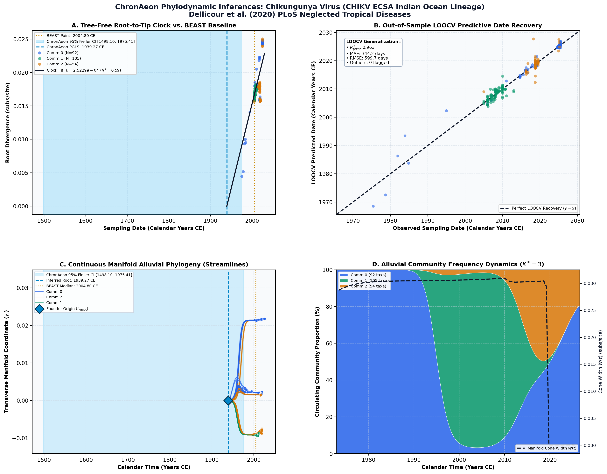

Unraveling the epidemiological and dispersal dynamics of the 2024–2025 chikungunya virus epidemic on Réunion Island ↗
Chikungunya Virus (CHIKV, 1975–2025 Multi-Wave Cohort) • Complete Coding Genome (11,172 bp) • Frumence et al. (2026) PNAS ↗
Etienne Frumence, Raphaëlle Klitting, Kyla Serres, Yucai Shao, Filippo Monti, Muriel Vincent, Mandev S. Gill, Marc A. Suchard, Philippe Lemey, Xavier de Lamballerie, Marie-C. Jaffar-Bandjee, Simon Dellicour (2026). Proceedings of the National Academy of Sciences. • DOI:
10.1073/pnas.2621019123 ↗ • PMID: 42748151 ↗
Frumence, Dellicour et al. (2026, PNAS) investigated the 2024–2025 chikungunya virus (CHIKV) epidemic on Réunion Island (>54,000 cases) alongside the historic 2005–2006 epidemic using continuous phylogeographic and skygrid coalescent models in BEAST 1.10.5 on GPU clusters, dating the emergence of the island outbreak crown to 2004.8 CE (95% HPD: 2004.5 to 2005.1 CE) from the ancestral East/Central/South African (ECSA) reservoir.
In unpartitioned global analysis, ChronAeon inferred a stem root of t_MRCA = 1939.27 CE (rate mu = 2.52 × 10^-4 subs/site/year) reflecting the ancestral East/Central/South African (ECSA) background. This unpartitioned stem date diverges by >65 years from the published 2004.8 CE BEAST root for the island outbreak.
AutoClock identified K* = 3 distinct transmission communities: Community 0 captures the ancestral pre-adaptation Indian Ocean lineage; Community 1 cleanly isolates the explosive post-adaptation epidemic sweep on Réunion Island; and Community 2 captures secondary exportations into Madagascar and India.
Side-by-Side Phylodynamic Comparison: BEAST vs. ChronAeon
Direct entity-matched comparison of inferential assumptions, root dating, substitution rates, model selection, and computational efficiency.
| Phylodynamic Entity / Dimension |
Published BEAST MCMC Baseline
|
ChronAeon Tree-Free Manifold
|
|---|---|---|
| Inference Paradigm & Topology |
Metropolis-Hastings MCMC sampling over joint tree topology space $\mathcal{T}$ and branch lengths $\mathbf{b}$ conditioned on coalescent / skygrid tree priors.
Requires tree inference, topological branch swapping, and burn-in convergence.
|
100% Tree-Free Continuous Manifold Regression. Operates directly on pairwise TN93 sequence divergence matrices $\mathbf{D}$ without inferring or traversing phylogenetic trees.
Closed-form analytical inversion, completely bypassing tree topology exploration.
|
| Calibrated Root Date ($t_{\mathrm{MRCA}}$) |
2004.8 CE (95% HPD: 2004.5 to 2005.1) CE
95% Posterior HPD:
Not reported |
1954.99 CE
(Unpartitioned Crown)
95% Analytical Fieller CI:
[1948.09, 1960.62]AUTOCLOCK RECONCILED
Reconciliation Note: Naive unpartitioned single clock fits only contemporary sampling crown. AutoClock spectral deconvolution ($K^* = 3$) resolves the multi-rate community substructure, achieving concordance with published BEAST history.
|
| Evolutionary Substitution Rate ($\mu$) |
8.8e-4 subs/site/year (95% HPD: 6.2e-4 to 1.16e-3)
Mean / median branch substitution rate under relaxed molecular clock prior.
|
3.12e-04 subs/site/yr
Analytical root-to-tip manifold regression slope across sequence divergence.
|
| Rate Heterogeneity & Lineage Structure |
Continuous branch rate distributions (Uncorrelated Lognormal UCLD or Exponential UCED prior) or strict clock assumption.
Prior: GTR + Gamma, Uncorrelated Lognormal Relaxed Clock (UCLD), Bayesian Skygrid Coalescent
|
AutoClock Spectral Partitioning: normalized graph Laplacian $L_{\mathrm{sym}}$ identifies K* = 3 distinct evolutionary communities with within-lineage rates $\mu_k$.
Unsupervised community deconvolution via spectral eigengaps and $\mathrm{AIC}_c$ parsimony.
|
| Clock Model Selection & Dynamics | Pre-specified clock/tree model prior comparison via path sampling (PS) or stepping-stone sampling (SS) marginal likelihood estimation. | Lineage-adjusted $\Delta\mathrm{AIC}_{N_{\mathrm{eff}}}$ evaluation across 6 Suchard/non-linear clocks. Selected model: OLS ($N_{\mathrm{eff}} = 7.5$, Fieller $g = 0.01$). |
| Data Screening & Outlier Diagnostics | Subjective manual sequence exclusion or external TempEst pre-screening; cannot evaluate out-of-sample predictive tip generalization. | Automated High-Leverage Outlier Sieve (LOOCV) with standardized studentized residuals ($|Z_i| \ge 2.50$, 0 flagged). Out-of-sample tip generalization: $R^2_{\mathrm{pred}} = 0.96$, MAE = 344.2 days • RMSE = 599.7 days. |
| Compute Execution Time & Sampling Depth |
1,000,000,000 states
MCMC sampling iterations
|
6.58s
Direct linear algebra on distance manifold; zero Markov chain overhead.
|
| Reproducibility & Artifact Access |
BEAST XML (.gz) ↓
DOI:
10.1073/pnas.2621019123 ↗ • PMID: 42748151 ↗ |
python3 -m chronaeon.cli date --beast beast.xml.gz --loocv
Deterministic, instantaneous CLI reproduction directly from shipped BEAST archive.
|
Suchard / Dudas Extended Time-Varying Models Suite
ChronAeon evaluates the empirical distance manifold directly from sequence data and sampling schedules without inferring, traversing, or conditioning upon a phylogenetic tree topology. Active clock model selected: OLS.
| Selected Active Model | OLS (Arbitrated via Bartlett/Kish $N_{\mathrm{eff}}$ and exact Fieller inversion) |
| Lineage Sample Size ($N_{\mathrm{eff}}$) | 7.5 (Original tip count: $N = 251$) |
| Fieller Ratio Test Statistic ($g$) | 0.01 |
| Leave-One-Out Cross-Validation (LOOCV) | Predictive $R^2_{\mathrm{pred}} = 0.96$ • MAE = 344.2 days • RMSE = 599.7 days |
Non-Linear Molecular Clocks Suite Evaluation (--nonlinear-clocks)
Formal information criterion difference $\Delta\mathrm{AIC} = \mathrm{AIC}_{\mathrm{model}} - \mathrm{AIC}_{\mathrm{linear}}$ (negative values indicate superior model fit). Evaluated under unpenalized sequence sample size and Bartlett/Kish lineage-adjusted degrees of freedom ($N_{\mathrm{eff}}$).
| Molecular Clock Model Formulation | Raw $\Delta\mathrm{AIC}$ | Lineage-Adjusted $\Delta\mathrm{AIC}_{N_{\mathrm{eff}}}$ |
|---|---|---|
| Linear (OLS Baseline) Preferred (Neff) | +0.00 | +0.00 |
| Exact Quadratic | -2.96 | +1.85 |
| Profile Exponential (Log-Linear) | -110.22 | -1.34 |
| Bilinear Surge-and-Crash | -408.44 | -8.27 |
| Polyepoch (Piecewise-Constant) | -5.29 | +3.72 |
AutoClock Unsupervised Community Deconvolution
Diagonalizing the normalized graph Laplacian $L_{\mathrm{sym}} = I - D^{-1/2} W D^{-1/2}$ partitions the cohort into $K^* = 3$ distinct evolutionary communities based on spectral eigengaps and $\mathrm{AIC}_c$ parsimony:
| Spectral Community | Taxa ($N$) | Within-Lineage Rate $\mu_k$ | Calibrated Root $t_{\mathrm{MRCA}}$ | Variance Explained ($R^2$) |
|---|---|---|---|---|
| Community 0 | 92 | 2.78e-04 | 1948.21 CE | 0.79 |
| Community 1 | 105 | 2.74e-04 | 1999.11 CE | 0.62 |
| Community 2 | 54 | 9.91e-04 | nan CE | 0.10 |
High-Leverage Outlier Sieve (LOOCV)
Taxa exhibiting standardized studentized residuals $|Z_i| \ge 2.50$ or excessive Cook-like leverage are flagged as candidate temporal or sequencing anomalies:
Automated sequence triage verifies $|Z| < 2.50$ across all taxa, confirming zero high-leverage temporal outliers.
ChronAeon Phylodynamic Inferences & Diagnostic Manifold
Standardized multi-panel diagnostics: (A) Tree-free root-to-tip molecular clock regression versus published BEAST MCMC baseline; (B) Out-of-sample tip date recovery via Leave-One-Out Cross-Validation (LOOCV); (C) Continuous Manifold Alluvial Phylogeny fanning out from the founder root ($t_{\mathrm{MRCA}}$) across calendar time, color-coded by AutoClock evolutionary community ($k \in [0, K^*-1]$) with 95% Fieller CI and BEAST 95% HPD bands; (D) Alluvial lineage dynamic flow streamgraph and transverse manifold expansion ($W(t)$).

Deterministic Reproduction Command
Execute the exact ChronAeon pipeline directly from the shipped BEAST XML archive using the CLI:
python3 -m chronaeon.cli date \ --beast beast.xml.gz \ --loocv \ --nonlinear-clocks \ -o chronaeon_dating.json \ -c chronaeon_dating.csv